anymark: ilustrações
Cinco cenas de linha em 240x160, traço de 1,5 px, cor de destaque só no que importa. Cada
arquivo traz a paleta e segue o esquema claro ou escuro do sistema. Gerado por
scripts/build-illustrations.mjs.
